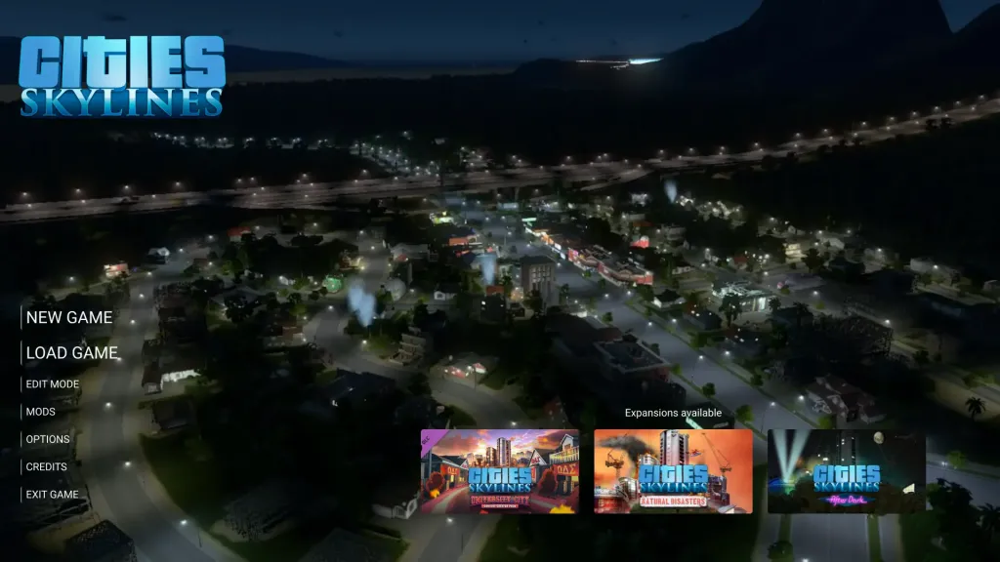

A redesign proposal focused on clarity, hierarchy and player orientation in a complex simulation game menu.

View full imageWhy main menus matter
A main menu is the first interaction many players have with a game. It sets expectations, communicates tone and helps players understand how to enter the experience.
In a simulation game like Cities: Skylines, the menu also needs to support complex actions such as continuing a city, starting a new one, managing saves, adjusting settings and accessing content.
Understanding player intent
The most common player actions should be easy to identify. Continue, new game, load game and settings should not compete equally with secondary items.
A good menu organizes actions around player intent rather than simply listing options.
Hierarchy and clarity
Visual hierarchy helps players understand what is primary, secondary and optional. Typography, spacing, grouping and contrast can make the menu easier to scan.
When hierarchy is weak, players spend more effort deciding what to do.
Supporting the game fantasy
A functional menu can still feel connected to the identity of the game. Visual language, background, motion and layout can reinforce the city-building fantasy without sacrificing usability.
The best menus are both clear and atmospheric.
The redesign lesson
Improving a main menu is not only about making it prettier. It is about reducing hesitation, clarifying choices and helping players enter the game with confidence.
For complex games, menu UX is part of the player experience from the first second.
takeaway